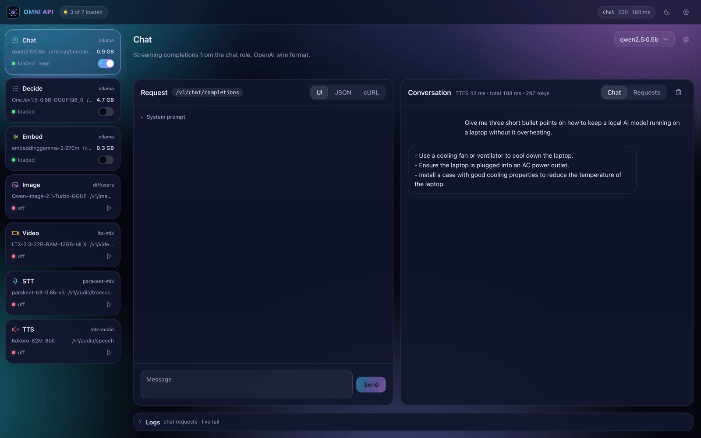
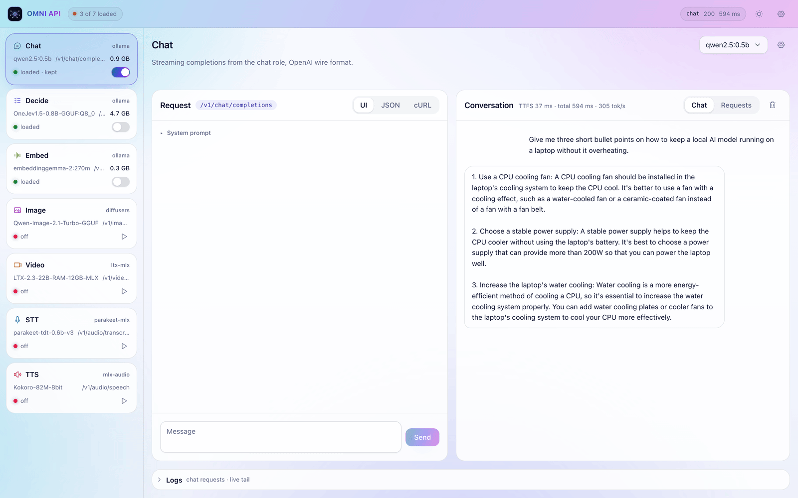

One terminal per model
omni runs every model behind 127.0.0.1:10000, supervised and restarted if one crashes.
free · local · open source
Chat, speech, images, video and embeddings — running on your own machine behind a single port. No terminals to juggle, no model hunting, no API keys. Set it up in a couple of clicks and start building.
curl -fsSL https://raw.githubusercontent.com/nvkudva/omni-api/main/install.sh | sh
Watch
Why one app needs many models, how omni sets them up, and the install commands. No sound needed.
Why omni
A virtual agent needs text, speech-to-text, text-to-speech and embeddings. Wiring them up by hand is where the weekend goes.
omni runs every model behind 127.0.0.1:10000, supervised and restarted if one crashes.
Small, sensible defaults for every role. The playground searches for alternatives and warns before one won't fit your RAM.
omni init installs and downloads everything. Your app asks for a role like chat or tts, never a model name.
Architecture
Your app talks to one gateway. omni routes each request to the right model and keeps the engines private.
your app
gateway
roles · engines
Quickstart
Install, pull the models, start. Then open the playground and click.
Brings Python and uv if they are missing, then installs the omni command. On macOS you can use Homebrew instead.
curl -fsSL https://raw.githubusercontent.com/nvkudva/omni-api/main/install.sh | sh
# or: brew tap nvkudva/omni && brew trust nvkudva/omni && brew install omniInstalls Ollama if needed, fetches chat, decide and embed, and sets up speech. Add --media for image and video.
omni init # core models + speech
omni init --media # also image and videoRuns the gateway and every worker in the background. Then open http://127.0.0.1:10000/. Stuck? omni doctor says what to fix.
omni upPlayground
No terminal needed after step 3. Each role has a page to test it, swap its model and watch its logs.


Build
Change one base_url. Full endpoint reference is in the README.
from openai import OpenAI
client = OpenAI(base_url="http://127.0.0.1:10000/v1", api_key="local")
client.chat.completions.create(model="qwen2.5:0.5b", messages=[{"role": "user", "content": "Hi!"}])
client.embeddings.create(model="embed", input=["refund policy"])
client.images.generate(model="image", prompt="a lighthouse at dawn")
client.audio.speech.create(model="tts", voice="af_heart", input="Hello from omni.")FAQ
No. omni binds to 127.0.0.1. The only network traffic is the first model download from Ollama or Hugging Face.
Every worker is health-checked and restarted automatically. One role going down never takes the others with it.
Yes — it loads the model. Pin the roles you use often and they stay loaded across restarts.
macOS on Apple Silicon runs every role. Linux serves chat, decide and embed through Ollama, and adds speech and video with the media extra. Image generation is macOS-only.
One install, one port, every model your app needs.